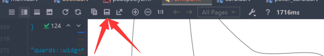

flutter生成UML
flutter生成UML的方法
准备
- 首先，确保你安装了PlantUML这个插件
- 安装dcdg.dart
1 | dart pub global activate dcdg |
使用
1 | dart pub global run dcdg -o 要保存的文件路径/文件名.puml |
即可
See --help for more options, including ways to filter what ends up in the output.
保存UML为图片
点这里即可：
参考
本博客所有文章除特别声明外，均采用 CC BY-NC-SA 4.0 许可协议。转载请注明来自 ZWN's blog！
相关推荐


评论